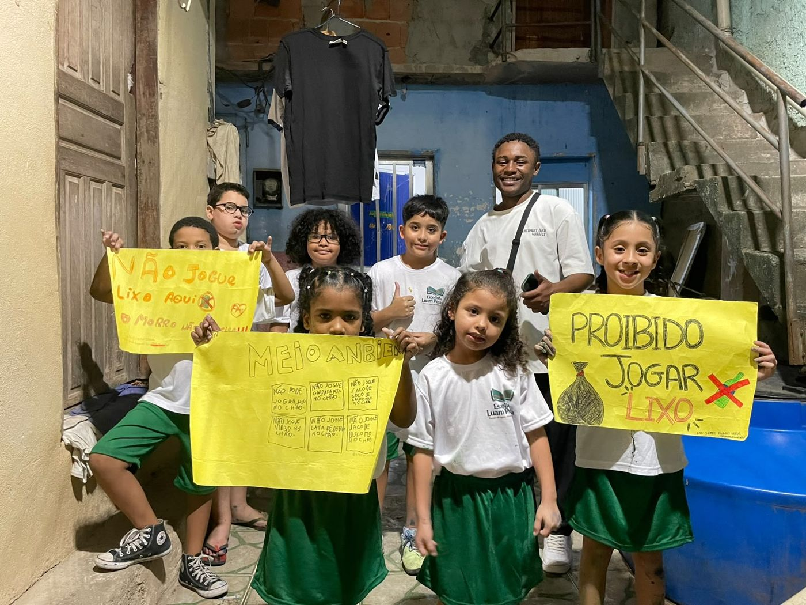

Educação, leitura e pensamento crítico para transformar o território.
No coração do Morro Santo Amaro, a Escola Luam Pessoa é o polo educacional do AME o Santo Amaro. Nascida do antigo Grupo de Estudos Luam Pessoa e do Ame Estudar, a Escola nasceu para garantir o que nenhuma criança, adolescente ou jovem da comunidade deveria ter que disputar: o acesso à educação de qualidade.
Aqui, educação é ferramenta de futuro — e também de identidade. Além das aulas, a Escola mantém viva a tradição de formação e pensamento crítico que deu origem ao seu nome: leitura coletiva, debate e troca de saberes para fortalecer lideranças comunitárias e a consciência do território.
A Escola atende principalmente crianças e adolescentes de 6 a 18 anos — mais da metade tem entre 6 e 8 anos — moradores do Morro Santo Amaro e região. É uma turma plural: quase equilibrada entre meninos e meninas, e que reflete a diversidade racial do território, entre estudantes brancos, pretos, pardos e indígenas.
Muitos chegam até nós ainda em processo de alfabetização — hoje, cerca de 7 em cada 10 estudantes já leem e escrevem com autonomia, resultado direto do trabalho pedagógico contínuo da Escola. Também acolhemos estudantes com TDAH, ansiedade e dentro do espectro autista, com atenção e cuidado individualizados.

Já realizamos 379 passeios com nossos estudantes — do esporte à cultura, do museu à praia —, levando meninas e meninos do Santo Amaro para conhecer o Rio de Janeiro e o mundo além do morro: partidas de futebol e basquete, visitas a museus e passeios históricos, dias de praia no Leblon, em Copacabana e no Recreio, além de experiências educacionais em espaços de tecnologia e no planetário.
Dados do Relatório Ame Estudar 2024, construído a partir de questionários respondidos por estudantes e responsáveis ao longo do ano.
Educadores(as), voluntários(as) e parceiros(as) são sempre bem-vindos. Fale com a gente.
Entrar em contato